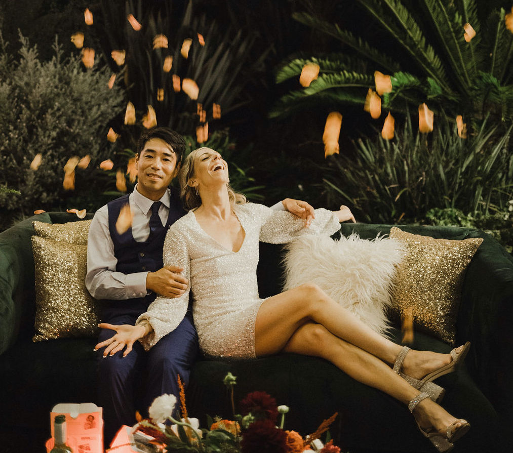

It's the Yosh's!
By - Hillary Yoshida
Published: Before wedding season
Planning a wedding is no joke. And if it is, I forgot to laugh.
But rest assured, I've compiled some tips from my recent experience to help you laugh through the pain...
I mean, the planning!
1. Bridesmaids
Having some of your best friends standing with you at the alter is a great feeling. But please,
please for
their sake, let them pick out their own dress. Give them a general direction, but remember, pink taffeta and puffy sleeves don't
look good on anyone.
Trust me.
Top Bridesmaid Ideas
- Try a jumpsuit!
- Pick a neutral, timeless color
- Black - looks good on everyone
2. Venue
You want to be sure you choose a venue before anything else. Chances are, the places you are interested in are also on top of
many other couples' lists. Depending on the season and location, outdoor weddings are always enjoyable.
Here
is one of my favorites.
Top Venue Ideas
- Beach wedding
- Outdoor garden
- Consider something unique, like an art gallery
3. Food and Drink
Perhaps one of the most important decisions you will make, take some time to decide what type of food and bar options you want.
Consider the venue, season, and your guest list. Make sure to accommodate dietary restrictions like gluten-free,
vegan, etc.
This is a good article to reference.
Top Food and Drink Ideas
- Venue caterer
- Ask your favorite restaurant if they cater
- Food truck
Extra Advice
- Get good rest before the big day
- Drink a lot of water
- Don't stress about the planning, just laugh
Best of luck planning your wedding, and be sure to send pictures and stories. We would love to hear how your big day went!